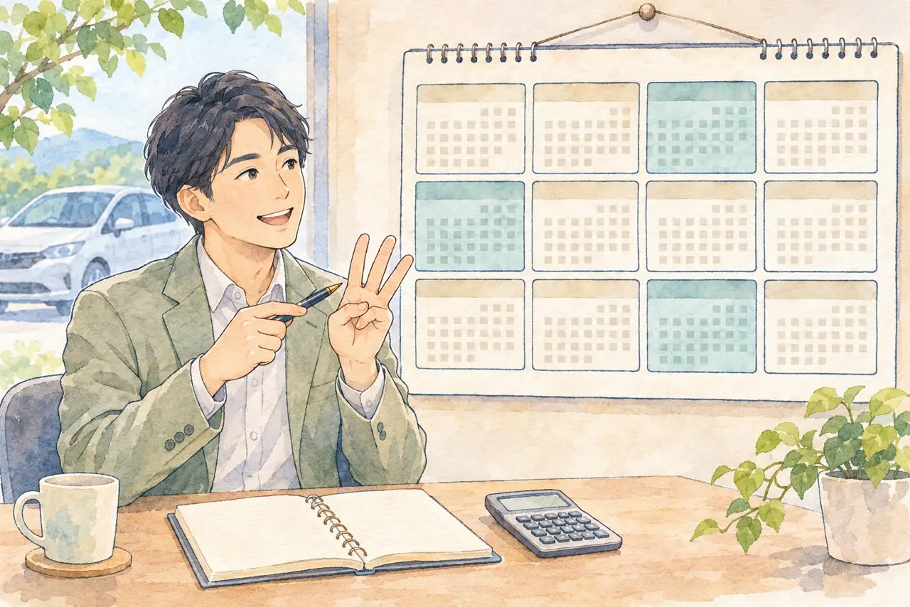

廃車のあとの自賠責保険で迷っている方へ
廃車したら自賠責保険は解約できる？
返戻金が戻る条件と、解約の手順・解約日の注意点
公開
こんにちは、東京都足立区江北で自動車解体・廃車買取をしている「大崎商店 環七店」です。
この記事の要点
- 自賠責保険は、廃車にしても自動では解約になりません。
- 手続きをしないまま満期になると、戻ったはずの返戻金を受け取れなくなります。
- 廃車の手続きを済ませてから、契約している保険会社へ申し出ます。
「廃車にしたけれど、自賠責保険はどうなるの？」
「保険料が戻ると聞いたけれど、自分で手続きが必要？」
「ディーラーや保険の代理店に頼めば、解約してもらえる？」
自賠責保険は、廃車にしても自動では解約になりません。 手続きをしないまま満期まで放っておくと、戻ったはずの返戻金を受け取れなくなります。
この記事では、自賠責保険を解約できる場面、手続きの手順、解約日の考え方、戻る金額の考え方を、公的な案内や保険会社の案内をもとにご紹介します。税金の還付も含めた全体像は、「廃車にするとお金は戻ってくる？」の記事をご覧ください。後半では、足立区の大崎商店の場合もご案内します。
① 自賠責保険は、いつでも解約できるわけではありません

自賠責保険は、車を公道で走らせるために加入が義務付けられている「強制保険」です。そのため、乗りたくなくなったからといって、自由に解約することはできません。
日本損害保険協会の案内では、解約できるのは次のような、限られた場合です（主なものを抜粋しています）。
| 場面 | 解約できる条件 |
|---|---|
| 普通車（登録自動車）を廃車にした | 抹消登録（永久抹消・一時抹消・輸出抹消仮登録）を受けた |
| 軽自動車・二輪の小型自動車を廃車にした | 使用をやめて、車両番号標（ナンバープレート）を返納した |
| 原動機付自転車（原付）などを廃車にした | 使用をやめた |
| 同じ車に、保険が二重にかかっている | 重複契約（保険期間の終わりが遅いほうを残して、解約できる） |
廃車を理由に解約する場合は、抹消登録や所定のナンバー返納手続きが済んでいることが前提です。車をお店に渡しただけでは、廃車手続きが済んだとは限りません。引き続き公道で使う車は、自賠責保険が必要です。重複契約などは、廃車による解約とは別の条件で扱われます。
② 解約の手続きの流れ
自賠責保険の解約は、自動では行われません。ご自身（または委任した人）が、契約している保険会社へ申し出る必要があります。
必要書類や受付方法は、廃車の手続きをする前から確認できます。ご自身で解約する場合は、抹消後すぐに申し出られるよう準備しておくと安心です。
手続きの順番
- 廃車の手続き（抹消登録・ナンバーの返納）を済ませる
- 自賠責保険証明書で、契約している保険会社を確認する
- 保険会社に連絡して、解約の方法と必要書類を確認する
- 書類をそろえて、保険会社へ提出する（Web・郵送・窓口など）
- 解約の手続きが済んだあと、返戻金の案内を受ける
代理店では、解約の手続きができません
日本損害保険協会の案内では、自賠責保険の解約は、代理店では行えず、保険会社の窓口へ問い合わせるとされています。ディーラーや、保険の代理店で契約した場合でも、解約の申し出は保険会社へ行う、と覚えておきましょう。
受け付けの方法は、保険会社ごとに違います。たとえば東京海上日動では、Webでの申請か、受付フォームから郵送の書類を取り寄せる方法が案内されています。完了まで2週間程度かかる場合があるとのことです。
③ 必要な書類
日本損害保険協会の案内では、解約に必要な書類は、次の4つです。
- 解約承認請求書（保険会社の所定の用紙）
- 自賠責保険証明書
- 保険会社が指定する本人確認書類（提出の要否や使える書類は、申請方法などによって異なります）
- 解約の要件を確認できる書類
- 廃車の場合（登録自動車）：登録事項等証明書など
- 重複契約の場合：ほかの自賠責保険証明書、またはそのコピー
本人確認書類は、東京海上日動では運転免許証・マイナンバーカード・健康保険の資格確認書などが案内されています。返戻先を契約者本人名義の口座にする場合は不要とする扱いもあります。書類の有効期限や、個人番号などを隠す必要がある箇所も、契約先の案内を確認してください。
④の「廃車を確認できる書類」は、保険会社によって認める書類が異なります。たとえば東京海上日動では、登録識別情報等通知書、自動車検査証返納証明書、軽自動車届出済証返納証明書などが挙げられています。どの書類が使えるかは、解約の前に保険会社へ確認してください。
自賠責保険証明書をなくしてしまったときは
自賠責保険証明書は、契約している保険会社に再発行を申し込めます。ただし、解約のために、必ず先に再発行が必要とは限りません。東京海上日動のWeb申請では、紛失時は本人確認書類を用意する案内があります。
まずは、保険会社へ「証明書をなくしたが、廃車による解約をしたい」と伝え、再発行が必要か、代わりの書類で進められるかを確認してください。再発行を行う場合も、問い合わせ先は契約先の保険会社です。
④ 解約日は「廃車にした日」ではありません
ここが、いちばん間違えやすいところです。
日本損害保険協会の案内では、解約日は、契約者が保険会社へ必要書類を出して、解約の申し出をした日とされています。抹消登録をした日ではありません。
保険会社の案内でも、同じ考え方です。
- 東京海上日動：必要書類一式を添えてWebで申請し、保険会社がWeb上で受け付けた日が解約日
- あいおいニッセイ同和損保：契約者が必要書類を提出して、保険会社が受け取った日が解約日
電話で問い合わせた日や、郵便を発送した日が、そのまま解約日になるとは限りません。 受付に必要な書類と、解約日になる条件を、申請方法に合わせて確認してください。
返戻金は月単位で計算されるため、申し出が遅れて残りの月数が変わると、返戻金が減ったり、出なくなったりします。 廃車の手続きが済んだら、早めに解約の手続きを進めましょう。
⑤ 戻る金額の考え方

自賠責保険の返戻金は、解約日から保険期間の終わりまで、1か月以上残っているときに発生します。
- 1か月未満の場合は、返戻金が出ません。 東京海上日動の案内では、満期まで1か月未満など返戻金が発生しない場合は、返戻のご案内も送付されません。
- 日割りではなく、月単位で計算されます。 残りの日数ではなく、残りの月数が基準です。
- 支払った保険料を、単純に月数で割った額にはなりません。 あいおいニッセイ同和損保の案内では、支払った保険料から、保険会社の諸経費や代理店手数料などを差し引いた額をもとに、月割りで算出します。そのため、支払った保険料のうち、残りの期間にあたる割合よりも、少ない額になります。
実際にあった例
当店で一時抹消の手続きをした、普通乗用車の例です。
- 保険期間：24か月（保険料 17,650円）
- 一時抹消の登録：令和8年11月5日
- 保険期間の終わりまで：約18か月が残っていた
- 保険会社が示した返戻金：9,290円
17,650円を24か月で割って、18か月分を計算すると約13,200円です。実際に示された額は、それより約4,000円少なくなりました。保険会社の諸経費などが引かれるためです。
金額は、契約した時期や保険料によって変わります。あくまで1つの例として、ご覧ください。
実際の金額は、契約した時期や、保険の期間（12か月・24か月・36か月など）によって異なります。 早見表の数字をそのまま当てはめず、契約している保険会社へ、解約日の見込みを伝えて確認するのが確実です。
なお、軽自動車は自動車税（軽自動車税）の月割りの還付はありませんが、重量税と自賠責保険は、普通車と同じ条件で戻ることがあります。くわしくは、「軽自動車は自動車税の還付がない？」の記事をご覧ください。
⑥ 場面別：こんなときは、どうなる？
ご自身で廃車の手続きをするとき
廃車の手続き（抹消登録・ナンバーの返納）が終わったら、ご自身で、自賠責の解約を保険会社へ申し出ます。 抹消登録の書類（登録事項等証明書など）は、解約の要件を確認する書類になるので、手続きのあと、なくさずに保管しましょう。
廃車の手続きの全体像は、「廃車は自分でできる？自分で手続きするか業者に頼むか」の記事をご覧ください。
廃車買取の業者に、車を引き渡すとき
自賠責の解約や、返戻金の受け取りを、業者に任せるのか、ご自身で行うのかを、車を渡す前に確認しましょう。
- 返戻金を、買取価格に含めて精算するのか
- 返戻金を、ご自身で受け取るのか
- 受け取る場合、どの書類を、いつまでに渡してもらえるのか
業者によって、考え方が違います。車を引き渡したあとでは、返戻金の扱いを変えられないことがあります。 引き渡しの前に、書面や口頭で確認してください。
車を売って、次の人が乗り続けるとき
車を売って、次の所有者がそのまま乗り続ける場合は、廃車ではありません。 自賠責保険も、抹消登録を前提にした解約とは扱いが変わることがあります。名義変更や、保険の引き継ぎについては、売却先と保険会社に確認してください。
同じ車に、保険が二重にかかっているとき
車検の時期などに、うっかり二重に加入してしまうことがあります。この場合は、保険期間の終わりが遅いほうの契約を残して、早いほうを解約できます。満期が同じ場合は、解約する契約を選べます。解約の要件を確認する書類として、ほかの自賠責保険証明書（またはそのコピー）が必要です。
任意保険の中断証明書は、自賠責の解約とは別の手続きです。くわしくは、「任意保険の中断証明、廃車のときに忘れずに」の記事をご覧ください。
⑦ よくある失敗
- 廃車にしたあと、解約を忘れる。 満期まで放っておくと、返戻金を受け取れません。
- ディーラーや代理店に頼めば、解約してもらえると思い込む。 解約の申し出は、保険会社へ行います。
- 解約日を、廃車の日だと思っている。 保険会社が必要書類を受け付けた日など、申請方法による条件の確認が必要です。
- 満期の直前に解約して、1か月未満になる。 返戻金は出ません。
- 証明書をなくして、相談を後回しにする。 再発行が必要か、代わりの書類で解約できるかを、保険会社へ確認しましょう。
⑧ 大崎商店の場合
ここからは、足立区の大崎商店の場合をご紹介します。
大崎商店は、車の引き取り・買取に伴って、普通車の一時抹消・永久抹消の両方を行っています。軽自動車も、状況に応じて一時使用中止・解体返納（一時使用中止ずみなら解体届出）を行います。書類手続きだけの代行は、お受けしていません。解体する車でも、自賠責の返戻金を無駄にしたくないときは、先にナンバーを返納して、一時抹消にすることが多いです。
返戻金の受け取り方は、次の2つの方法をご案内しています。
方法1：買取価格に含めて、手続きを当店にお任せいただく
自賠責保険の返戻金の見込額を、買取価格に含めて、手続きを当店にお任せいただく方法です。自賠責保険の契約内容に応じた変更・解約など、必要な手続きを当店が行います。
買取価格に含めた返戻金は、当店が受け取る扱いになります。お客様に同じ金額が別途支払われるわけではありません。 お支払い前に、含まれる金額と手続きの内容をご説明します。
方法2：ご自身で手続きして、受け取る
買取価格に含めず、ご自身で必要な手続きを行って受け取る方法も選べます。書類の準備や申請はご自身で行う必要があり、手間はかかりますが、条件を満たす返戻金をご自身で受け取れます。
ご自身で受け取るご希望は、車の譲渡や廃車の手続きを進める前にお知らせください。 手続きの進め方と、書類の渡し方を、事前に確認します。抹消の証明書類が必要な場合は、ご相談ください。交付できる時期は手続きの進み具合によるため、ご希望の期限に間に合うとは限りません。
名義変更済みの書類のコピーもお渡しできますが、名義変更の確認書類と、廃車を確認する書類は、役割が異なります。自賠責の解約に必要な書類名と、コピーでよいかを保険会社に確認し、その内容を当店へお伝えください。
当店では、手続きと受け取りをお任せいただくケースが多くなっています。ご希望は、買取のご相談時にお知らせください。
税金の還付も含めた、お金の全体像は、「廃車にするとお金は戻ってくる？」の記事をご覧ください。
ご自分の車の場合が気になったら、お気軽にご相談ください。車の状態と置き場所を伺い、ご案内します。
電話で相談する03-3854-4141よくある質問
Q. 廃車にすると、自賠責保険は自動で解約になりますか？
A. なりません。保険会社へ、ご自身（または委任した人）が申し出る必要があります。
Q. 自賠責の解約は、ディーラーや代理店でできますか？
A. 日本損害保険協会の案内では、解約の手続きは代理店では行えず、保険会社の窓口へ問い合わせるとされています。
Q. 車検が残っていても、自賠責保険を解約できますか？
A. 車に乗り続けている間は、原則として解約できません。普通車は抹消登録を受けたとき、軽自動車はナンバーを返納したときなど、限られた場合に解約できます。
Q. 満期まで1か月未満でも、返戻金は出ますか？
A. 解約日から満期まで1か月未満の場合は、返戻金が出ません。
Q. 自賠責保険証明書をなくしました。解約できますか？
A. 契約先の保険会社へ、紛失したことと解約したいことを伝えてください。再発行が必要な場合と、本人確認書類などで解約手続きを進められる場合があります。
Q. 返戻金はいくら戻りますか？
A. 契約した時期や保険の期間、解約日によって異なります。支払った保険料を月数で割った額にはならないため、契約先の保険会社へ確認してください。
自賠責のことも、大崎商店にご相談ください
自賠責の解約や返戻金のことは、少しわかりにくいかもしれません。車検証と自賠責保険証明書を見れば、いつまで残っているかを、おおよそ確認できます。まずはお電話で、車種と、車検や自賠責の期限をお知らせください。
大崎商店では、
- 解体費用・手続き代行費用・印紙代は、別請求しません
- 足立区内は、引き取り無料
- 足立区外で買取価格がつかない車は、環七店から車で片道約30分圏内は引き取り無料
- 買取価格がつく車は、圏外でも、所在地と車の状態によっては無料で引き取り（事前にご案内します）
- 車種や状態によっては、引き取り当日その場で現金買取も可能
- 車のお持ち込みは、どこからでも歓迎（基本は環七店。日時は、事前にお電話でご相談ください）
ご来店の前に、お電話ください。引き取りなどで外出していることもあり、お電話いただければ、受け入れの可否や、ご案内できる日時をお伝えできます。
大崎商店 環七店
電話：03-3854-4141
〒123-0872
東京都足立区江北7丁目1−3
営業時間：月〜土 10:00〜18:00
休業日：日曜・祝日
環七沿い／舎人ライナー
西新井大師西駅
大崎商店 入谷店
電話：03-3899-2837
〒121-0836
東京都足立区入谷7丁目5−11
営業時間：月〜土 9:30〜17:30
休業日：日曜・祝日・第2土曜
引き取りやご相談のお電話は、環七店がスムーズです。お電話の際は、「自賠責の返戻金について」とお伝えください。車検証と自賠責保険証明書をお手元にご用意いただくと、ご案内がスムーズです。
※掲載のイラストはAIで作成したイメージです。実際の店舗・車両・相談風景を撮影したものではありません。
参考：日本損害保険協会・自賠責保険の契約を解除（解約）する場合の注意点／日本損害保険協会・自賠責保険証明書を紛失したとき／東京海上日動・廃車や重複契約で契約を解約したい／あいおいニッセイ同和損保・自賠責を解約したら保険料は戻りますか（いずれも2026-11-07 確認）